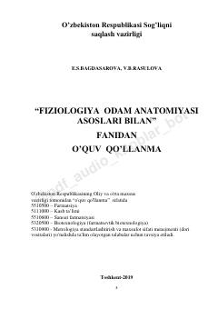

FOOdam fiziologiyasi va anatomiyasi asoslari bo'yicha tibbiyot va farmatsiya talabalari uchun o'quv qo'llanma.
Ushbu o'quv qo'llanma farmatsevtika, biotexnologiya va tibbiyot yo'nalishidagi talabalar uchun mo'ljallangan bo'lib, odam fiziologiyasi va anatomiyasining asosiy qonuniyatlarini qamrab oladi. Kitobda organizm tizimlarining faoliyat mexanizmlari, ularning o'zaro bog'liqligi hamda hayotiy jarayonlarning nazariy va amaliy asoslari yoritilgan.